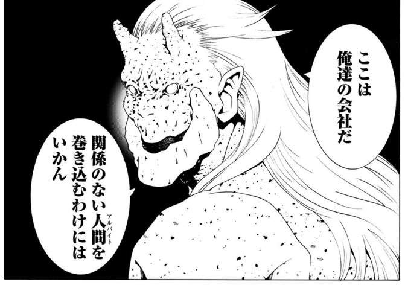

わいが女騎士やったら、オークに惚れとったわ。
公開日：
 (バーズコミックス)")
- 作者: 三ツ矢彰 Rootport(原著)
- 出版社/メーカー: 幻冬舎
- 発売日: 2016/02/24
- メディア: コミック
- この商品を含むブログ (1件) を見る
依然流行った Twitter ネタをマンガにしたものみたい。
女騎士「くっ……殺せ！」
— Rootport (@rootport) 2015, 7月 10
ハイオーク「がはは！そうはいくか！お前の恥ずかしい部分をたっぷりと会計監査してやる！」
女騎士「会計監査」
ハイオーク「まず、この印刷費。そして有明までの交通費と宿泊代の使途について聞かせてもらおうか」
女騎士「殺せぇぇええ！！」
オーク「なに？帳簿の数字が90ゴールド合わないだと」
— Rootport (@rootport) 2015, 7月 11
女騎士「くっ……殺せ！」
オーク「がはは！この程度の経理テクニックも知らんとは！ズレが9の倍数のときは、どこかで数字をあべこべに入力している可能性が高いのだ」
オーク「ほら、ここ。1234が正しいのに1324と入力されている」
オーク「なに？またもや帳簿の金額が合わないだと？」
— Rootport (@rootport) 2015, 7月 11
女騎士「くっ…殺せ！」
オーク「バカめ、まずはズレた金額を0.08で割れ。出てきた数字にズレた金額を足して、似たような金額の取引を探すのだ」
オーク「ほら、ここ。税抜で入力しなければならんのに、消費税込みの金額が入力されている」
女騎士「見ろ！ついに簿記に合格したぞ！」
— Rootport (@rootport) 2015, 7月 11
オーク「そうか、ではさっそく我々の製造している棍棒の原価計算をしてもらおう」
女騎士「くっ…殺せ！」
オーク「どうした？」
女騎士「まだ3級なのだ……」
このネタ自体が完成されすぎていたせいか、マンガの表現はちょっと微妙だった気もするけれど、コラムも含めて割と楽しめた。会計って実務なしでは退屈で、勉強してもなかなか身につかない分野じゃない？ わいも大学でちょろっと学んだけど、社会に出て実際に帳簿つけたり、手形を裏書したり、割ったり、小切手切ったりするまでは単なるリクツの世界で、なかなか腑に落ちないところがあった。でも、こういうマンガだったら楽しく学べるかも。萌え萌えな新入女子社員が上司に学びながら……みたいな体裁の本よりもわざとらしくないしネ（笑
それにしてもこのマンガ、オークが男前すぎる。

惚れなしゃあないやろ。わいもこうやって手取り足取り教えてもらいたかった。ほんま「くっ……殺せ！！」だわ。